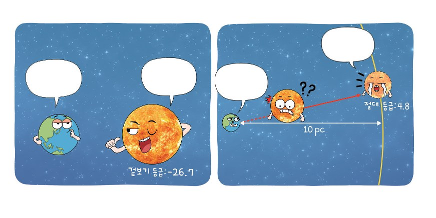

별의 등급과 밝기
밤하늘의 별은 밝은 것도 있고 어두운 것도 있습니다. 별의 밝기가 다양한 까닭은 실제 밝기가 다르거나, 지구로부터의 거리가 다르기 때문입니다.
이 단원에서 나는
- 별의 밝기와 거리의 관계를 설명할 수 있다.
- 별의 등급과 밝기의 관계를 설명할 수 있다.
도입 같은 전등인데 밝기가 달라진 까닭은?
같은 전등인데 내가 느끼는 밝기가 달라진 까닭은 무엇일까요?
전등으로부터 거리가 멀어지면 전등에서 나온 빛이 넓게 퍼집니다. 빛이 비치는 면적이 넓어지므로 같은 면적에 들어오는 빛의 양은 줄어듭니다. 밤길의 가로등도 마찬가지입니다. 가로등의 밝기는 모두 같지만 가까운 가로등이 더 밝아 보입니다.
개념 1 거리에 따른 빛의 세기 변화 교과서 285쪽 | 그림 3 |
광원으로부터의 거리가 2배, 3배, … 늘어나면 같은 양의 빛이 더 넓은 면적에 퍼집니다. 그래서 단위 면적에 들어오는 빛의 양은 거리의 제곱에 반비례합니다.
3차원으로 보는 빛의 퍼짐
천천히 회전합니다 · 슬라이더로 거리를 바꿔 보세요여기까지 정리
- 광원으로부터의 거리가 멀어질수록 별의 밝기는 어두워진다.
- 거리가 2배, 3배, … 늘어나면 단위 면적에 들어오는 빛의 세기는 ¼배, ⅑배, …가 된다.
- 단위 면적에 들어오는 빛의 양은 거리의 제곱에 반비례한다.
개념 2 별의 밝기를 등급으로 어떻게 나타낼까? 교과서 286쪽
히파르코스는 맨눈으로 가장 밝게 보이는 별들을 1등급, 가장 어둡게 보이는 별들을 6등급으로 정했습니다. 이후 과학자들은 1등급인 별이 6등급인 별보다 100배 밝고, 1등급 차이마다 밝기 차이는 약 2.5배라는 것을 알아냈습니다.
| 그림 4 | 등급에 따른 밝기 차이
등급이 클수록 어두운 별우리 눈에 보이는 별의 밝기를 기준으로 정한 밝기 등급을 겉보기 등급이라고 합니다.
겉보기 등급의 음수는 무슨 의미인가? 처음에는 1~6등급만 있었지만 망원경 관측을 통해 +6.0보다 약 2.5배 어두운 별은 +7.0으로, +1.0보다 약 2.5배 밝은 별은 0.0, 그보다 약 2.5배 더 밝은 별은 −1.0으로 하여 겉보기 등급이 음수인 별도 정해지게 되었다. 태양의 겉보기 등급은 −26.7이다.
개념 3 겉보기 등급과 절대 등급 교과서 286~287쪽

왜 ‘같은 거리’에서 비교해야 할까?
겉보기 등급이 가장 작은 별은 −26.7등급인 태양으로 가장 밝게 보입니다. 하지만 태양이 가장 밝게 보이는 까닭은 지구로부터 가장 가까이 있기 때문입니다.
따라서 별의 실제 밝기는 모든 별을 같은 거리에서 비교해야 합니다. 모든 별이 10 pc의 거리에 있다고 가정했을 때의 밝기로 정한 등급을 절대 등급이라고 합니다. 태양의 절대 등급은 4.8등급입니다.
모든 별을 10 pc에 세워 보자
버튼을 누르면 별들이 10 pc 위치로 이동하며 밝기가 달라집니다10 pc보다 가까운 별
겉보기 등급 < 절대 등급
예) 시리우스 — 겉보기 −1.5, 절대 1.4
정확히 10 pc인 별
겉보기 등급 = 절대 등급
두 등급의 차가 0
10 pc보다 먼 별
겉보기 등급 > 절대 등급
예) 베텔게우스 — 겉보기 0.6, 절대 −5.9
| 그림 6 | 같은 별의 겉보기 등급과 절대 등급 비교 · 출처: Foundations of Astronomy 14th ed, 2017
정리 핵심 정리
- 거리와 밝기의 관계 : 광원으로부터의 거리가 멀어질수록 별의 밝기는 어두워진다. 거리가 2배, 3배 늘어나면 밝기는 ¼배, ⅑배가 된다. 즉 밝기는 거리의 제곱에 반비례한다.
- 겉보기 등급 : 맨눈으로 볼 때 별의 밝기를 나타낸 등급. 1등급이 6등급보다 100배 밝다. 1등급 차이는 약 2.5배.
- 절대 등급 : 모든 별이 10 pc 거리에 있다고 가정했을 때의 밝기에 해당하는 등급
- 밝기로 별의 거리 구하기 : (겉보기 등급 − 절대 등급)의 값이 클수록 별까지의 거리가 멀다.
확인 이것만은 & 문제로 확인
스스로 정리하기
별의 실제 밝기는 ㅈ ㄷ 등급으로 비교한다.